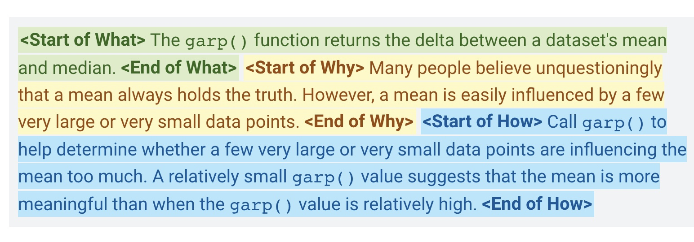
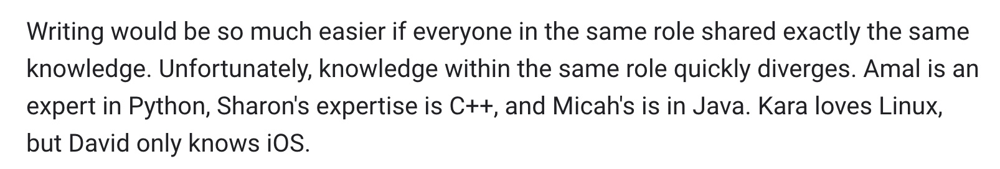

【Mar】Google Technical Writing Courses
原文链接：https://developers.google.com/tech-writing/one
完整版中文翻译：https://docs.google.com/document/d/16aoMrMGHPIR1i_eUNRvksdDdwcDG6KiOJN6Vfh-n8-s/edit
学习目标
Part 1
- 恰当的使用术语
- 识别和消除奇怪的代词使用
- 区分主动和被动语态
- 把被动语态转换为主动语态
- 确认三种主动语态优先于被动语态的方式
- 学会三种使语句更加清晰和引人入胜的策略
- 学会四种缩短语句的方法
- 理解bulleted list和numbered list的区别
- 创建有帮助的清单
- 写出提纲挈领的段首句
- 每一段都集中在一个话题上
- 在每个文档的开头说明要点
- 确定目标受众
- 确定目标受众已经知道什么以及目标受众需要学习什么
- 将比较大的主题适当的分割
- 正确使用逗号，括号，冒号，破折号和分号
Part 2
- 从几种不同的策略中选择编写第一稿的策略，以及其他用于编写第二稿和第三稿的策略。
- 利用多种技术来检测自己的写作中的错误。
- 组织大型文档。
- 介绍文档的范围和所有先决条件。
- 写下清晰的图表注释。
- 在技术插图中选择适当的信息密度。
- 将读者的注意力集中在插图上。
- 通过“大图”插图建立上下文。
- 有效地修改技术插图。
- 创建有用，准确，简洁，清晰，可重用和注释良好的示例代码，以演示一系列复杂性。
- 标识不同的文档类型。
- 描述几乎所有内容。
- 同情初学者并为他们编写教程。
词汇
定义新的或者不为人熟知的术语
要找到对你的受众来说不熟悉的术语，当提及这种术语的时候，做到一下两点：
- 如果这个术语已经存在了，添加一个link到一个非常好的解释上去。
- 如果这个doc是在介绍这个术语或者创造出这个术语，把所有的定义都放到一个【术语表】上去。
对于某一种概念始终使用一个术语
在一篇文章中一个概念对应的术语必须始终只有一个。一个简单的例子，下面这段话错误的把 protocol buffers 替换成了 protobufs 。
Protocol Buffers provide their own definition language. Blah, blah, blah. And that’s why protobufs have won so many county fairs.
技术写作是刻板严格的，但是也可以用一种很好的方法解决这个问题。比如在写一个非常长的概念的名字的时候，可以声明它的缩写，然后在后面使用这个缩写。
Protocol Buffers (or protobufs for short) provide their own definition language. Blah, blah, blah. And that’s why protobufs have won so many county fairs.
正确使用首字母缩写
注意以下四点：
第一次使用一个不是全体读者都熟悉的首字母缩写的时候，必须声明它的全名。并且全名和首字母缩写都要加粗。
如果开始使用首字母缩写，就不要再返回头去使用全名了。
首字母缩写对于读者来说需要花更多的时间去处理文字信息，但是很多大量使用的经典的首字母缩写反而会让读者忘记全名是啥。比如HTML。
首字母缩写准则：
不要定义未来使用次数不多的首字母缩写
对于满足如下两种标准的term定义它的首字母缩写：
- 首字母缩写比全名短的多
- 首字母缩写会在doc中使用非常多次
减少代词的歧义
代词大多数情况下指代之前提及过的一个名词，跟编程里的指针的概念很像，并且就像指针十分容易出错一样，代词十分容易产生error。不合适的使用代词会产生认知上的nullptr错误，但是代词的便捷性在适当的场景下还是无可替代的。
使用代词需要遵从以下准则：
- 只在已经介绍了指代对象的前提下指代该对象
- 代词需要尽可能的在位置上接近指代对象，如果距离超过5个单词，一般需要再写一遍指代对象而不是使用代词。
- 如果在指代对象和代词之间出现了一个新的名词，最好使用指代对象而不是代词。
It、They、Them、Their是最容易出现的容易混淆的词。举个例子：
Python is interpreted, while C++ is compiled. It has an almost cult-like following.
这里很难分辨It的指代，违反了我们的第三条原则。
You may use either Frambus or Foo to calculate derivatives. This is not optimal.
This、That这两个词也很容易出现混淆
使用这两个方法来消除歧义：
- 不使用this that，用具体的名词来代替
- 在this that之后立刻写上指代的名词
主动语态
从被动语态中分离出主动语态
在技术写作中应该主要使用主动语态，要做到以下两点：
- 从主动语态中区分出被动语态
- 把被动语态转换成主动语态
Active Voice Sentence = actor + verb + target
主动语态范式： 动作执行者+动词+目标
Passive Voice Sentence = target + verb + actor
被动语态范式： 目标 + 动词 + 动作执行者。有些被动语态会忽略actor，强调target。
识别被动式的动词
注意命令式动词的语态必须是主动式。
在更复杂的句子里识别主动语态
略
更倾向于使用主动语态而不是被动语态
更多的使用主动语态，谨慎的使用被动语态。
主动语态提供了以下好处：
- 大多数读者心理上会把被动语态转换为主动语态，如果你直接使用主动语态，会减少读者的processing time
- 被动语态可能影响你的观点在别人脑子里的转换，
- 有些被动语态的句子会忽略actor角色，可能造成不清晰
- 被动语态通常更冗长一些
Be bold—be active.
清晰的语句
技术写作的追求是表述清晰准确，清晰准确比其他任何准则，如信达雅，都重要。这一节给出几个让你的语句变得beautifully clear的方法。
选择strong verbs
动词是句子中最重要的成分，选择一个正确的动词才能让其他部分与想表达的意思匹配，但是很多writer只在很小范围的动词里选择， which is like serving your guests stale crackers and soggy lettuce every day。选择动词要选择精确、Strong、Specific的动词，与之相对的是选择imprecise, weak, generic的动词。举个例子：
- 注意be的选择： is, are, am, was, were, etc
- Occur
- Happen
体会一下场景的动词选择上的区别
Weak VerbStrong VerbThe error occurs when clicking the Submit button.Clicking the Submit button triggers the error.This error message happens when…The system generates this error message when…We are very careful to ensure…We carefully ensure…
不准确的generic动词还会导致：
- 句子中不准确的或者缺失的actor
- 被动语态的句子【？这里应该有点问题，没写完的样子】
减少there is和there are的使用
使用这两个开头的句子很冗长，最好直接展示真正的主语和动词。大多数情况下，你都可以直接删去there is或者there are
也可以使用真正的主语来代替
有选择的最小化某些形容词和副词
形容词在诗歌里很好，但是在技术文章里尽量避免使用，因为其无法量化和明确。
说一个东西很快，如果说screamingly fast
短语句
写代码的时候我们都希望能够减少代码量，原因是：
- 更短的代码意味着更易读
- 更短的代码一般更好维护
- 额外的代码可能会带来失败
实际上上述理由也适用于技术协作
- 更短的文档读起来更快
- 更短的文档更易于维护
- 额外的文字可能带来理解的偏差
找到最短的文档表述可能会花一些时间，但是总是值得的简单的句子在
每句话表达一个idea
每句话关注在一个idea，thought，或者concept上
The late 1950s was a key era for programming languages because IBM introduced FORTRAN in 1957 and John McCarthy introduced Lisp the following year, which gave programmers both an iterative way of solving problems and a recursive way.
修改为：
The late 1950s was a key era for programming languages. IBM introduced FORTRAN in 1957. John McCarthy invented Lisp the following year. Consequently, by the late 1950s, programmers could solve problems iteratively or recursively.
把长句子转换为list
举个例子
To alter the usual flow of a loop, you may use either a break statement (which hops you out of the current loop) or a continue statement (which skips past the remainder of the current iteration of the current loop).
上面这段话就像表达break和continue两个操作，但是文字看起来很复杂，使用list会很清晰
To alter the usual flow of a loop, call one of the following statements:
- break, which hops you out of the current loop.
- continue, which skips past the remainder of the current iteration of the current loop.
去除或者减少无关的文字
举个例子：
An input value greater than 100 causes the triggering of logging.
实际上causing the triggering完全没有必要，直接写trigger logging就可以了
几个练习
- In spite of the fact that Arnold writes buggy code, he writes error-free documentation.
- Changing the sentence from passive voice to active voice enhances the clarification of the key points. 【换成clarifies】
- Determine whether Rikona is able to write code in COBOL. 【换成can即可】
- Frambus causes the production of bugs, which will be chronicled in logs by the LogGenerator method. 【前面的换成produce，后面换为主动语态】
减少从句的使用
从句是一个句子附属的独立逻辑，从句里可能含有action或者actor。每一个句子都有以下两种从句：
- Main clause
- Zero or more subordinate clauses
写从句的时候要保持one sentence == one idea的准则，不能发散太多。
列表和表格
选择正确的列表类型
技术写作主要使用以下三种：
bulleted lists
- items无序
numbered lists
- items有序
embedded lists【also called run-in list】
- 一个在句子里的list，例：
The llamacatcher API enables callers to create and query llamas, analyze alpacas, delete vicugnas, and track dromedaries.
保证list里每一个item都是parallel的
保证每一个item都是parallel的，这保障了List的效率。
item之间可以称为parallel的应满足以下四个条件：
- grammar 语法
- logical category 逻辑分类
- capitalization首字母大小写
- Punctuation 标点
每一个数字的list iterm用命令式动词开头
对于数字list，我们认为是一个流程，是有序的，每一步都以命令式动词开头，才能保持上面的parallel准则。
- Instantiate the Froobus class.
- Invoke the Froobus.Salmonella() method.
- The process stalls.
这个就没有遵守parallel准则。
创建合理的table
需要做到以下几点：
- 为每一行创建标签，不要让读者猜测这一行持有的是什么
- 避免给每一个cell里放太多的文字
- 尽量让每一行都parallel，但是没有list那么严格
介绍每一个list和table
为每一个list或者table写个介绍，帮助别人更好的理解
段落
为段落写一个好的段首句
读者对于段首句的印象是最深刻的，后面的句子则有可能被跳过。一个好的段首句确定了这一段的central point。需要特别小心我们介绍的对象颠倒的问题。举个例子：
A loop runs the same block of code multiple times. For example, suppose you wrote a block of code that detected whether an input line ended with a period. To evaluate a million input lines, create a loop that runs a million times.
这个段首句提示我们这段的中心是loop，但实际上看完以后你会发现中心是block of code。
正确的段首句如下：
A block of code is any set of contiguous code within the same function. For example, suppose you wrote a block of code that detected whether an input line ended with a period. To evaluate a million input lines, create a loop that runs a million times.
每一个段落聚焦在一个topic上
如果段落中出现跟主题不相关的句子，直接remove掉或者放到别的段落去。
不要让段落过长或者过短
- 太长的段落会让人太长不看
- 太短的段落出现很多的话说明你对整篇文章的组织结构有问题，需要聚合
清晰地回答What、Why、How
一个优秀的段落可以回答这三个问题：
- What are you trying to tell your readers?
- Why is it important for the reader to know this?
- How should the reader use this knowledge. Alternatively, how should the reader know your point to be true?
举个例子：

受众
定义受众

不愧是谷歌的写作指南，我觉得这要是换果爹写就是David only knows Android【David好惨
主要基于两个因素考虑：角色、时间。
基于这两个因素的原因是，不同的角色的知识面是不同的，需要使用不同的讲解方式；时间也会影响角色的理解，比如一个随着工作时间的变长，大部分软件工程师都会失去对微积分的了解，即便在刚毕业的时候理解的还很深刻。
确定受众学习的内容
写出受众为了实现目标需要做的一切步骤清单。某些情况下需要写出需要执行的任务。
面向受众优化文档
需要写出满足受众需求的文档而不是自己的解释自己的文档，这并没有标准可言，但是可以从这几个方面关注如何完成这个目标：
- 词汇和概念
- 知识的诅咒，专家很容易忽略讲解新手不知道的知识
- 文字简单，不要用“之乎者也”
- 文化中立
文档
我们已经讲解了句子和段落，还缺乏把他们组织起来成为文档的方法。
声明Doc’s Scope
一个好的文档会在一开始定义它的scope，比如：
This document describes the overall design of Project Frambus.
更好的做法是把文档的non-scope也定义出来。
This document does not describe the design for the related technology, Project Froobus.
scope的定义不只是对读者友好，也有利于作者更好的判断哪些内容应该写哪些不应该写。
声明受众群体
一个好的文档会定义好它的受众，比如：
I wrote this document for the test engineers supporting Project Frambus.
更好的做法是明确出阅读这篇文档需要的前置知识或经验。
This document assumes that you understand matrix multiplication and how to brew a really good cup of tea.
或者需要明确出prerequisite doc
You must read “Project Froobus: A New Hope” prior to reading this document.
声明你的关键观点
在文档的一开头就简明扼要的对文档的中心topic/solution作出说明。
专业的作者会把第一页写的很精彩来让读者继续阅读下去，revise多次第一页的内容吧。
永远为长篇技术文档编写一个总结。
把topic划分为section
从这几个问题入手：
- 是否清晰描述了某些concept
- 是否列出受众完成目标所需要的步骤
- 是否描述了一个系统所能表达的特性
总结
- 始终使用术语。
- 避免模棱两可的代词。
- 首选主动语态而不是被动语态。
- 选择strong的动词。
- 选择specific的动词
- 每个句子集中在一个想法上。
- 将一些长句子转换为列表。
- 消除不必要的单词。
- 顺序重要时，请使用编号列表；顺序无关时，请使用项目符号列表。
- 保持list item parallel。
- 编号的列表项以命令式单词开头
- 适当介绍以下你创建的list和table。
- 创建提纲挈领的段首句，以建立段落的central point。
- 将每个段落集中在一个主题上。
- 确定受众需要学习的内容。
- 使文档适合您的受众。
- 在文档开始处声明文档的关键点。